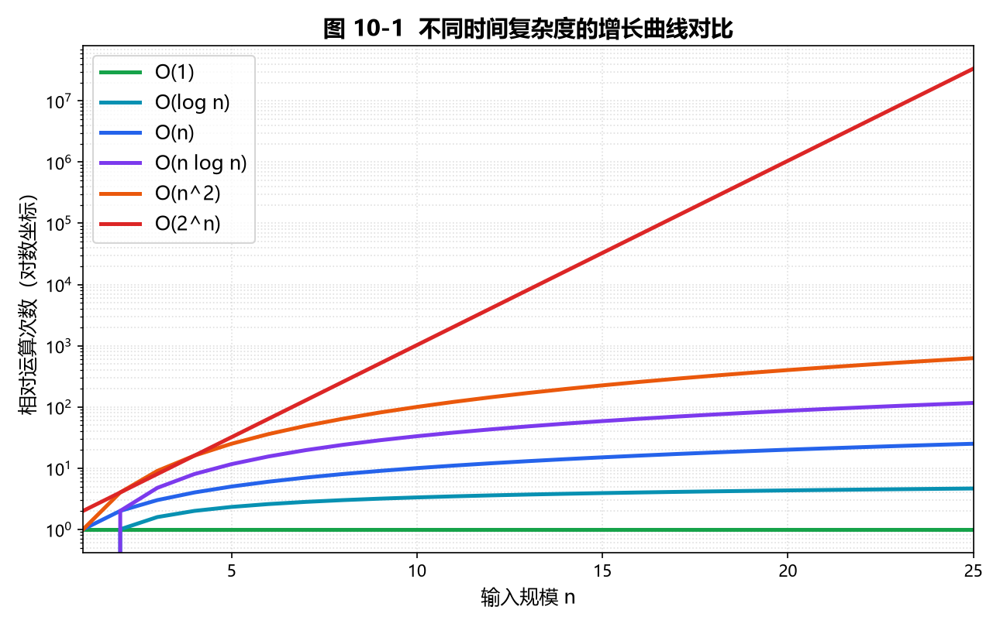
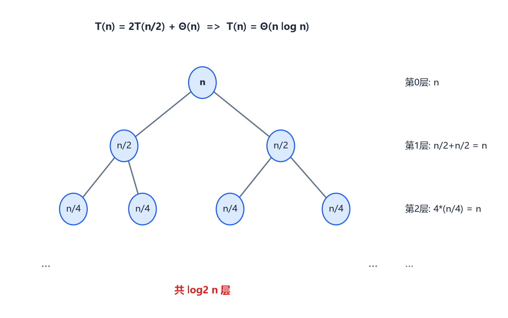
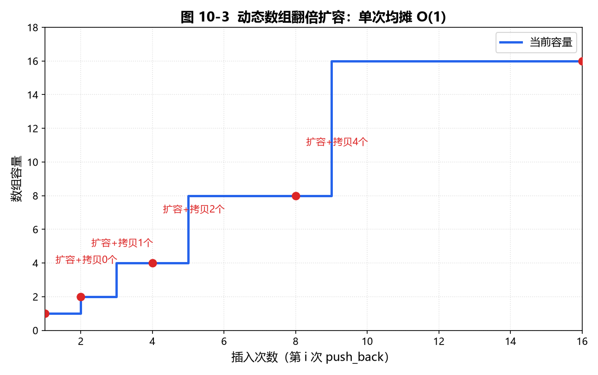

第10章 时间复杂度进阶
复杂度分析是区分"会不会写"和"写得好不好"的分水岭。初赛考概念、复赛考直觉：一眼看出算法会不会超时，靠的就是本章的渐进分析与递推求解。
10.1 渐进记号：O、Ω、Θ、o、ω
渐进记号用来忽略常数因子和低阶项，只看输入规模 n 趋大时的增长趋势。
| 记号 | 含义 | 大白话 | 例 |
|---|---|---|---|
O(g(n)) | 渐进上界 | "不会比 g 增长得更快" | 2n²+3n = O(n²) |
Ω(g(n)) | 渐进下界 | "至少和 g 一样快" | n² = Ω(n log n) |
Θ(g(n)) | 紧确界 | "就是 g 这个量级" | 3n²+1 = Θ(n²) |
o(g(n)) | 严格上界 | "严格比 g 慢"（非紧） | n = o(n log n) |
ω(g(n)) | 严格下界 | "严格比 g 快"（非紧） | n³ = ω(n²) |
注意 O 是上界而非"等于"：说 n = O(n²) 没错，但没信息量；通常我们说 O 时默认指最小的上界（紧上界）。
// 判断一个函数是否确实是某上界（教学直觉示例）
#include <iostream>
using namespace std;
// f 与 g 在 n 较大时的比值，若 f/g 有界则 f = O(g)
bool isBigO(double f(int), double g(int), int N = 1000) {
double mx = 0;
for (int n = 1; n <= N; ++n) {
double r = f(n) / g(n);
if (r > mx) mx = r;
}
return mx < 1e9; // 比值有上界即认为 f = O(g)
}
double f1(int n) { return 2.0 * n * n + 3.0 * n; }
double g1(int n) { return 1.0 * n * n; }
int main() {
cout << (isBigO(f1, g1) ? "2n^2+3n = O(n^2)\n" : "no\n"); // 输出成立
return 0;
}
10.2 常见复杂度与增长曲线
从快到慢（CSP-S 必须熟练排序）：
O(1) < O(log n) < O(n) < O(n log n) < O(n²) < O(n³) < O(2ⁿ) < O(n!)
直觉锚点（在 1 秒约 1 亿次运算的机器上）：
O(n²)：n ≈ 10⁴安全，n ≈ 10⁵危险。O(n log n)：n ≈ 10⁶ ~ 10⁷安全。O(2ⁿ)：n ≈ 20~25就到极限，绝不用于大n。O(n!)：n ≥ 12基本不可行。

图 10-1：横轴为输入规模 n，纵轴为相对运算次数（取对数坐标）。O(2ⁿ) 与 O(n!) 在 n 稍大时直接"起飞"，而 O(log n)、O(n)、O(n log n) 长期平缓。
// 数一数各层循环的实际复杂度（教学示例）
#include <iostream>
using namespace std;
int countWork(int n) {
long long ops = 0;
for (int i = 1; i <= n; ++i) // O(n)
for (int j = i; j <= n; j += i) // 内层约 n/i 次，总 Σ n/i = n·H(n) ≈ n log n
++ops;
return ops; // 该双重循环整体为 O(n log n)，而非 O(n^2)
}
int main() {
for (int n : {100, 1000, 10000})
cout << "n=" << n << " 运算次数≈" << countWork(n) << "\n";
return 0;
}
10.3 最坏、平均与最好情况
同一算法对不同输入耗时不同，复杂度要指明是哪种情况：
- 最坏情况（Worst）：保证不会更慢，工程上最常用（如快速排序最坏
O(n²)，但随机化后极难触发）。 - 平均情况（Average）：按输入分布求期望，理论价值高。
- 最好情况（Best）：往往没什么用，容易误导（如冒泡排序最好
O(n)，但别因此选它）。
// 线性查找的最好/最坏/平均（教学示例）
#include <iostream>
using namespace std;
// 在 a[0..n-1] 中找 x，返回下标或 -1
int linearSearch(int a[], int n, int x) {
for (int i = 0; i < n; ++i) { // 最好: 第1个就中 O(1); 最坏: 扫完 O(n)
if (a[i] == x) return i;
}
return -1; // 平均比较次数 (n+1)/2 = O(n)
}
10.4 递推关系与递归树
递归算法的时间常写成递推式 T(n)。解递推最直观的方法是画递归树，把每层工作量加总。
典型例子——归并排序：T(n) = 2T(n/2) + O(n)。递归树第 k 层有 2ᵏ 个结点，每个规模 n/2ᵏ，单层工作量 2ᵏ · (n/2ᵏ) = n；共 log₂ n 层，因此 T(n) = n·log₂ n = O(n log n)。

图 10-2：归并排序 T(n)=2T(n/2)+Θ(n) 的递归树。每层总代价恒为 n，深度 log₂ n，故总代价 Θ(n log n)。
// 递归树思想落到代码：归并排序的递归结构（教学示例）
#include <iostream>
#include <vector>
using namespace std;
void merge(vector<int>& a, int l, int m, int r) {
vector<int> t(r - l + 1);
int i = l, j = m + 1, k = 0;
while (i <= m && j <= r) t[k++] = (a[i] <= a[j] ? a[i++] : a[j++]);
while (i <= m) t[k++] = a[i++];
while (j <= r) t[k++] = a[j++];
for (int p = 0; p < k; ++p) a[l + p] = t[p];
}
void mergeSort(vector<int>& a, int l, int r) { // T(n) = 2T(n/2) + O(n)
if (l >= r) return;
int m = (l + r) / 2;
mergeSort(a, l, m);
mergeSort(a, m + 1, r);
merge(a, l, m, r);
}
int main() {
vector<int> a = {5, 2, 4, 6, 1, 3};
mergeSort(a, 0, a.size() - 1);
for (int v : a) cout << v << " "; // 1 2 3 4 5 6
cout << "\n";
return 0;
}
10.5 主定理（Master Theorem）
对形如 T(n) = a·T(n/b) + f(n)（a ≥ 1, b > 1 常数）的递推，比较 f(n) 与 n^(log_b a) 三情形：
| 情形 | 条件 | 结论 |
|---|---|---|
| 1 | f(n) = O(n^(log_b a − ε))，ε > 0 | T(n) = Θ(n^(log_b a)) |
| 2 | f(n) = Θ(n^(log_b a) · logᵏ n)（k ≥ 0） | T(n) = Θ(n^(log_b a) · log^(k+1) n) |
| 3 | f(n) = Ω(n^(log_b a + ε)) 且满足正则条件 | T(n) = Θ(f(n)) |
常见套用：
- 二分查找
T(n)=T(n/2)+O(1)→ 情形 1 →Θ(log n)（a=1,b=2,log₂1=0）。 - 归并/快速(平均)
T(n)=2T(n/2)+Θ(n)→ 情形 2（k=0）→Θ(n log n)。 - 二叉树遍历
T(n)=2T(n/2)+Θ(1)→ 情形 1 →Θ(n)。 - Strassen
T(n)=7T(n/2)+Θ(n²)→ 情形 1（log₂7≈2.81）→Θ(n^2.81)。
// 主定理情形判定器（教学示例：输入 a,b 及 f(n) 的级别，输出属于哪类）
#include <iostream>
#include <cmath>
using namespace std;
// level: 0=常数, 1=log, 2=n, 3=nlogn, 4=n^2 ... 这里只演示关键三种
string master(int a, int b, double nlogba) {
// nlogba = log_b(a) 已知时直接传，避免浮点误差
if (nlogba > 1.0) return "情形1为主: T(n)=Theta(n^{log_b a})";
if (fabs(nlogba - 1.0) < 1e-9) return "情形2: T(n)=Theta(n^{log_b a} * log n)";
return "需比较 f(n) 与 n^{log_b a}";
}
int main() {
cout << "归并 a=2,b=2,log2(2)=1 -> " << master(2, 2, 1.0) << "\n"; // 情形2
cout << "Strassen a=7,b=2,log2(7)=2.81 -> " << master(7, 2, log2(7)) << "\n"; // 情形1
return 0;
}
10.6 均摊分析（Amortized Analysis）
均摊分析回答："一连串操作的平均代价，而非单次最坏代价"。三种方法：
- 聚合分析：直接算
m次操作总代价除以m。 - 记账法：便宜操作"预存"，贵操作"扣款"。
- 势能法：定义势能函数
Φ，把"攒下的代价"量化。
10.6.1 动态数组扩容（聚合分析，均摊 O(1)）
vector 满时翻倍扩容：第 i 次插入若触发扩容，要复制 i 个元素；但扩容点 1,2,4,8,… 间隔倍增，复制总量 1+2+4+…+n < 2n，故 n 次插入总 O(n)，单次均摊 O(1)。

图 10-3：容量随插入在 1→2→4→8 翻倍。每次扩容的拷贝代价被其后成倍增长的"廉价插入"摊薄，平均每次插入仅 O(1)。
// 模拟动态数组翻倍扩容，验证总拷贝量 O(n)（教学示例）
#include <iostream>
#include <vector>
using namespace std;
int main() {
vector<int> a;
long long copies = 0;
int cap = 0; // 当前容量
for (int i = 1; i <= 16; ++i) {
if ((int)a.size() == cap) { // 满了，翻倍
int ncap = cap ? cap * 2 : 1;
copies += a.size(); // 复制旧元素
cap = ncap;
}
a.push_back(i);
}
cout << "插入16个，扩容拷贝总次数=" << copies << " (<=2n)\n"; // 1+2+4+8=15
return 0;
}
10.6.2 栈的多操作（记账法）
对栈执行 m 次 push/pop/multipop(k)（一次性弹出 k 个）。每次 pop 都对应一次此前的 push，所以 m 次操作里 pop 总数不超过 m，总 O(m)，均摊 O(1)/次——即便 multipop 单次可能 O(n)。
// 栈的多操作（multipop）均摊 O(1)（教学示例）
#include <iostream>
#include <vector>
using namespace std;
struct Stack {
vector<int> s;
void push(int x) { s.push_back(x); }
void pop() { if (!s.empty()) s.pop_back(); }
void multipop(int k) { while (k-- && !s.empty()) s.pop_back(); } // 单次最坏 O(n)
};
int main() {
Stack st;
for (int i = 0; i < 5; ++i) st.push(i);
st.multipop(3); // 弹 3 个
st.push(9);
st.multipop(10); // 一次弹空，但总 pop 数仍受 push 数限制
cout << "剩余大小=" << st.s.size() << "\n"; // 0
return 0;
}
10.6.3 并查集路径压缩（势能法）
并查集 find 配合路径压缩，单次均摊 O(α(n))（α 为反阿克曼函数，增长极慢，4 亿时 α≈4，可视为常数）。这正是第 9 章并查集"几乎常数"的来源。
// 路径压缩使 find 均摊 O(alpha(n))（教学示例，呼应第9章）
#include <iostream>
#include <vector>
using namespace std;
struct DSU {
vector<int> fa;
DSU(int n) : fa(n + 1) { for (int i = 1; i <= n; ++i) fa[i] = i; }
int find(int x) { // 路径压缩：把沿途父指针直接指向根
return fa[x] == x ? x : fa[x] = find(fa[x]);
}
void unite(int x, int y) { fa[find(x)] = find(y); }
};
int main() {
DSU d(6);
d.unite(1, 2); d.unite(2, 3); d.unite(4, 5);
cout << "1 与 3 同根? " << (d.find(1) == d.find(3) ? "是" : "否") << "\n"; // 是
return 0;
}
10.7 空间复杂度
时间之外还要算内存：
- 递归深度
d→ 递归栈O(d)（如快排最坏递归深度O(n)，可能爆栈；归并需O(n)辅助数组）。 - 数组/哈希表显式占用
O(n)。 - 原地算法（in-place）尽量做到
O(1)额外空间，但往往牺牲常数或可读性。
经验：n ≤ 10⁵ 时 O(n) 数组（≈ 4×10⁵ 字节 ≈ 0.4 MB）安全；O(n²) 二维数组在 n=10⁴ 时约 400 MB，危险。
10.8 常见算法复杂度速查表
| 算法 / 结构 | 最好 | 平均 | 最坏 | 空间 |
|---|---|---|---|---|
| 快速排序 | O(n log n) | O(n log n) | O(n²) | O(log n) |
| 归并排序 | O(n log n) | O(n log n) | O(n log n) | O(n) |
| 堆排序 | O(n log n) | O(n log n) | O(n log n) | O(1) |
| 二分查找 | O(1) | O(log n) | O(log n) | O(1) |
| 线性查找 | O(1) | O(n) | O(n) | O(1) |
| 二叉搜索树操作 | O(log n) | O(log n) | O(n) | O(n) |
| 红黑 / AVL 树 | O(log n) | O(log n) | O(log n) | O(n) |
| 哈希表（平均） | O(1) | O(1) | O(n) | O(n) |
| Dijkstra（堆优化） | — | O((V+E) log V) | O((V+E) log V) | O(V) |
| 并查集（路径压缩） | — | O(α(n)) 均摊 | O(α(n)) 均摊 | O(n) |
10.9 实测与量级估算（chrono）
比赛前用 chrono 实测一段代码的每秒运算量，反推 n 能开多大，比纯靠感觉稳。
// 实测每秒可执行的简单运算量（教学示例，用于估算 n 上界）
#include <iostream>
#include <chrono>
using namespace std;
int main() {
const int N = 100000000; // 1e8
auto t0 = chrono::high_resolution_clock::now();
long long s = 0;
for (int i = 0; i < N; ++i) s += i;
auto t1 = chrono::high_resolution_clock::now();
double sec = chrono::duration<double>(t1 - t0).count();
cout << "1e8 次加法耗时 " << sec << " 秒，约 " << (long long)(N / sec) << " ops/s\n";
return 0;
}
10.10 本章小结
- 复杂度看趋势不看常数；
O是上界，写题默认取紧上界。 - 排序牢记：
log n < n < n log n < n² < 2ⁿ < n!，据此判断会不会 TLE。 - 递推优先用主定理；递归树用于验证直觉。
- 单次要命中的贵操作，用均摊分析证明整体便宜（动态数组、栈、并查集）。
- 别忘了空间：递归深度、辅助数组、
O(n²)矩阵都可能爆内存。
随堂检测
-
（单选）下列复杂度从小到大排列正确的是？ A.
O(n²)<O(n log n)<O(2ⁿ)B.O(log n)<O(n)<O(n log n)<O(n²)C.O(n log n)<O(n)<O(log n)D.O(2ⁿ)<O(n!)<O(n³)参考答案
答案：B。解析（考点）：标准增长顺序为
O(1)<O(log n)<O(n)<O(n log n)<O(n²)<O(n³)<O(2ⁿ)<O(n!)。只有 B 正确。 -
（单选）递推式
T(n) = 2T(n/2) + Θ(n)由主定理得到？ A.Θ(n)B.Θ(n log n)C.Θ(n²)D.Θ(log n)参考答案
答案：B。解析（考点）：
a=2, b=2, log_b a = 1，f(n)=Θ(n)=Θ(n¹·log⁰n)属情形 2，故T(n)=Θ(n log n)。归并排序、快排平均即此。 -
（单选）
vector从空开始顺序push_backn个元素，整体与单次均摊时间分别是？ A.O(n²)，O(n)B.O(n)，均摊O(1)C.O(n log n)，均摊O(log n)D.O(1)，均摊O(1)参考答案
答案：B。解析（考点）：翻倍扩容总拷贝量
1+2+4+…+<n < 2n，n次插入总O(n)，单次均摊O(1)。动态数组"看起来会复制"但被成倍增长的廉价插入摊薄。 -
（单选）对栈做
m次push / pop / multipop(k)操作，总时间的渐进上界是？ A.O(m²)B.O(m·n)C.O(m)D.O(m log n)参考答案
答案：C。解析（考点）：每个
pop都对应一次之前的push，m次操作内pop总数不超过m，故总O(m)，单次均摊O(1)，与multipop单次多长无关。 -
（单选）并查集
find加路径压缩后，单次操作的均摊复杂度是？ A.O(log n)B.O(α(n))C.O(1)严格 D.O(n)参考答案
答案：B。解析（考点）：路径压缩 + 按秩合并，单次均摊
O(α(n))，α为反阿克曼函数，实际可视为常数（非严格O(1)），故 B 准确。 -
（单选）
n = 10⁵时，下面最可能因时间超限的是？ A.O(n log n)算法 B.O(n)算法 C.O(n²)算法 D.O(n)空间参考答案
答案：C。解析（考点）：
n=10⁵时n²=10¹⁰远超 1 秒约10⁸运算量，必然 TLE；A、B 安全。D 是空间不是时间，且O(n)空间也安全。